"August in Edinburgh is a glorious, mad, chaotic mess of creative energy where every street corner is a stage and every pub is a theatre."— Alan Cumming
Tap a day to expand. Ticketed shows are in blue. Please note you must be physically standing in the venue's queue 20-30 minutes before showtime to guarantee entry.
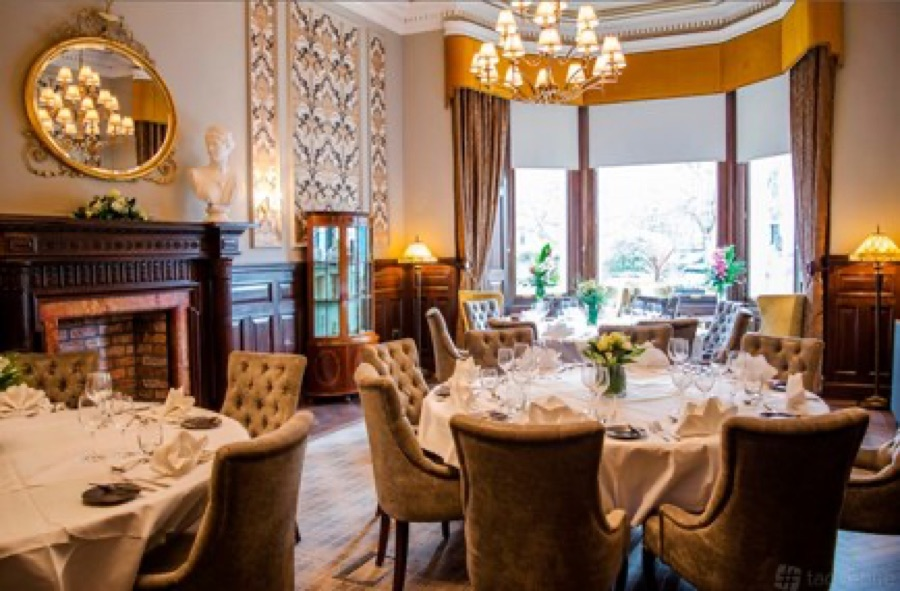
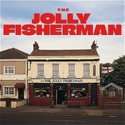
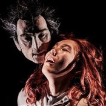
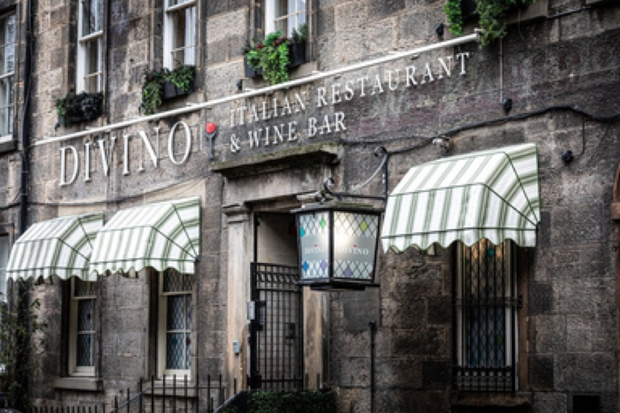
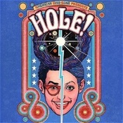
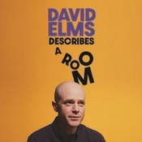
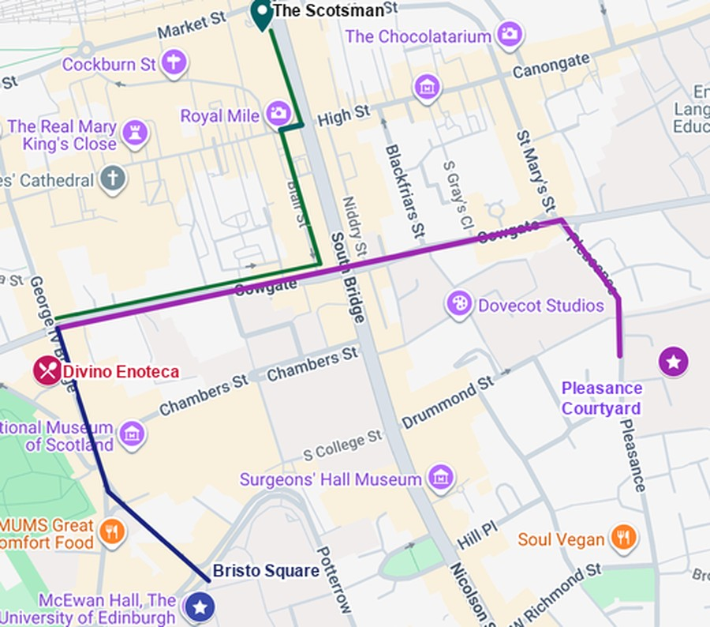
Fringe venues require all audience members to exit completely between performances so the crew can reset the stage, clean up, and allow the next queue to enter.
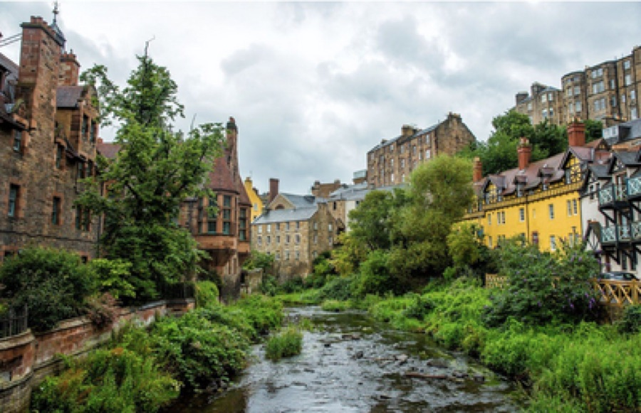
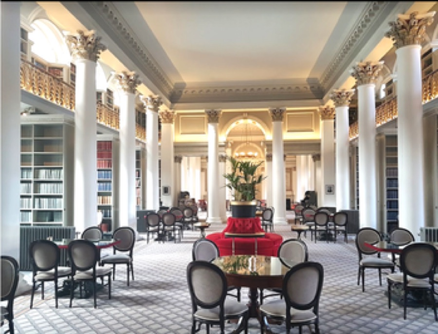
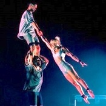
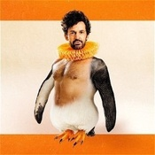
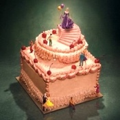
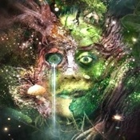
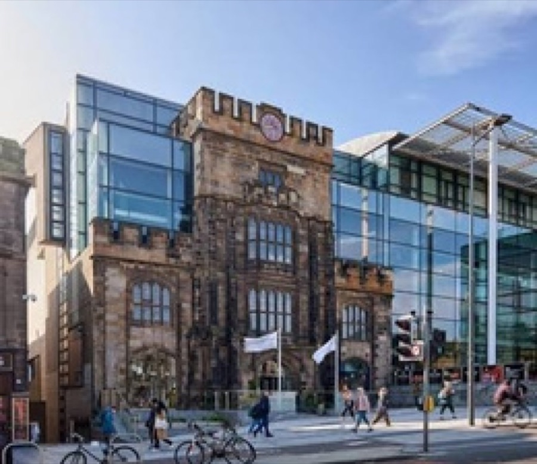
Hotel, contacts, venues, and things worth knowing.
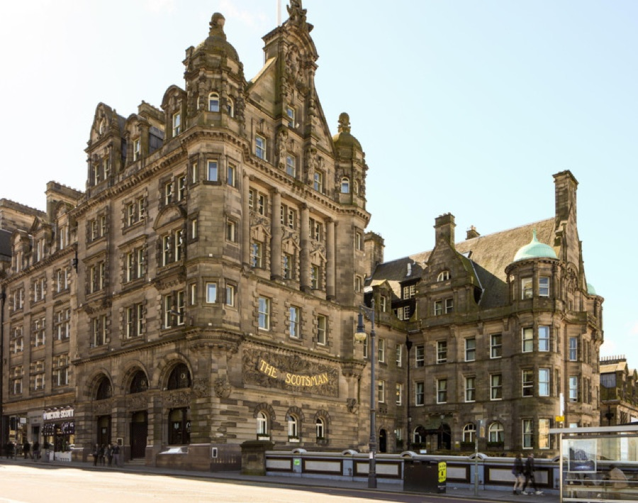
20 North Bridge, Edinburgh
+44 131 556 5565
Home base for the week — breakfast in the Grand Cafe, and the Jura Suite hosts our morning talks.
Almost all Fringe performances are General Admission — your ticket guarantees entry to the room, not a specific seat.
Zero-tolerance lock-out: even 30 seconds late and the doors are barred, your ticket is canceled, and there's no refund. Be in line 20–30 minutes before showtime.
Venues require the full audience to exit between performances so the crew can reset — don't expect to hold a seat between back-to-back shows.
Studio Theatre Edinburgh Festival Fringe experience coordinated by Curtain Up Experiences
Time and headline only. See the Plan tab for full details.
Edinburgh is wonderfully rich in museums — and most of the major ones are free.
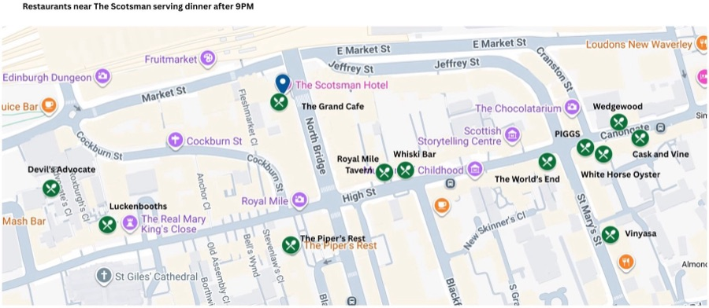
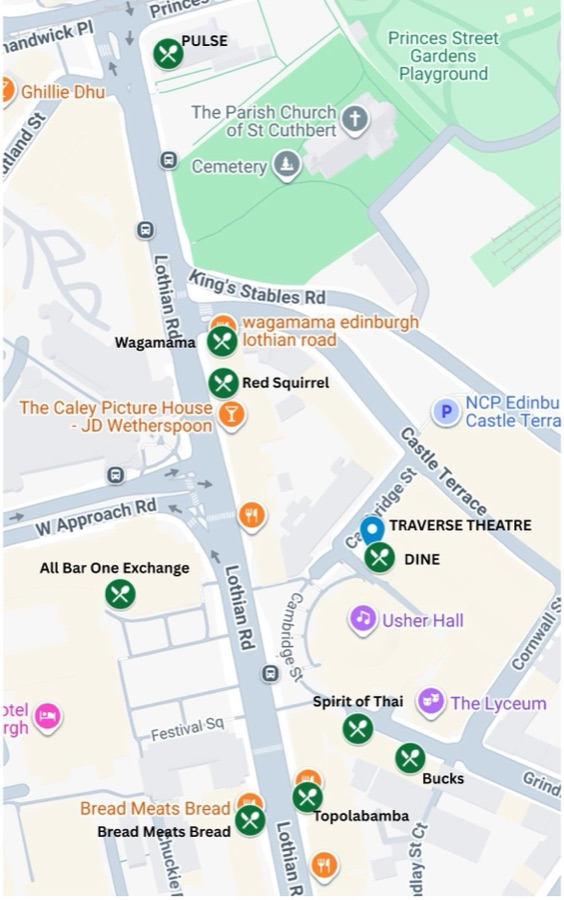
Congratulations! You are currently packed like a sardine into historic Old Town. Instead of complaining about your steps or your calves, let's gamify the chaos. This card tracks the best, most ridiculous, and completely accidental moments of your day. Mark your spots, dodge the street performers, and remember: if you haven't climbed a 45-degree hill today, you're on the wrong street.
Mark it off as it happens — five in a row wins!